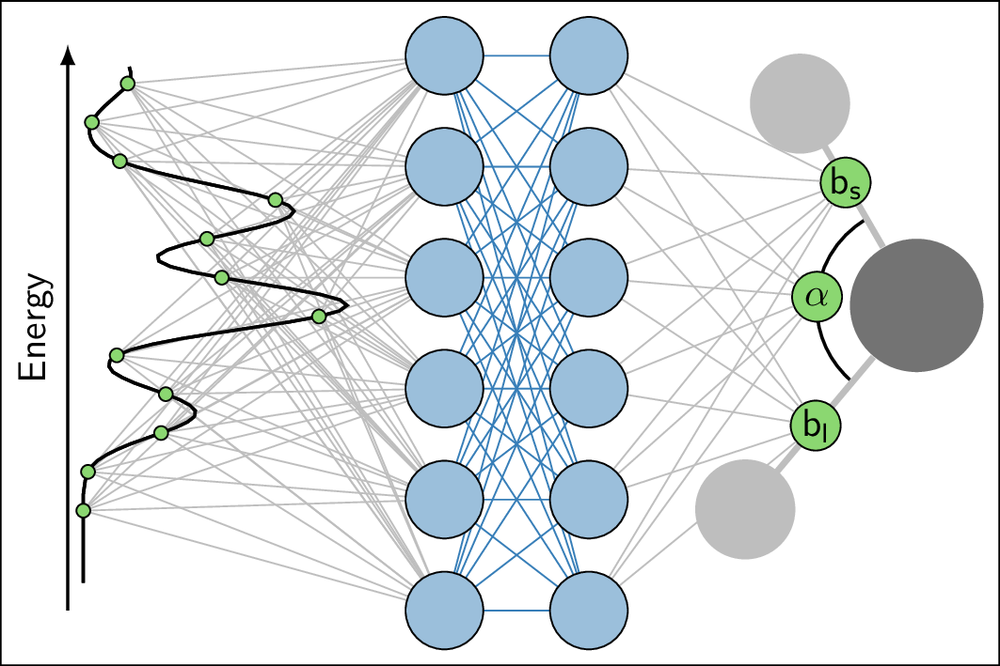

Anton Vladyka, PhD
LaTeX as the best tool for scientific publishing
For own purposes I did not use `modern` packages like cleanthesis or even KOMA. Instead I prepared my own header. Key points:
- Chapter page styling
- Headers with page numbers on the margin
- Margin chapter numbers
- Reduced font size in bibliography, table and figure captions etc.
% PAGE DIMENSIONS
% FOR 17x24cm
\usepackage[inner=30mm, outer=20mm,top=24mm,headsep=10mm,bottom=20mm,paperwidth=170mm,paperheight=240mm]{geometry}
% TABLES: full-width using X{10cm} column
\usepackage{tabularx}
% DRAWINGS (for chapter title)
\usepackage{tikz}
% TYPOGRAPHY:
\usepackage[protrusion=true,final,factor=1500]{microtype}
% SOME extra math symbols
\usepackage{amssymb}
% TEXT on top of pictures
% ABS or REL positioning
% REL is better for scaled figures
\usepackage[rel]{overpic}
% CHEMICAL formulae like \ce{SiO2} and \ce{(NH4)2S2O8}
\usepackage[version=4]{mhchem}
% UNITS
\usepackage{siunitx}
% DEFine new units
\DeclareSIUnit{\molar}{M}
\DeclareSIUnit{\GO}{\ensuremath{\text{G}_0}}
\DeclareSIUnit{\decade}{\ensuremath{\text{dec}}}
\DeclareSIUnit{\torr}{\ensuremath{\text{Torr}}}
% SPEcify delimiters
\sisetup{exponent-product =\cdot}
\sisetup{inter-unit-product = \cdot}
\sisetup{per-mode=symbol} % PER = /, not power -1
% CAPTIONS of figures/table styling
\usepackage[font={stretch=1.1,small},labelfont=bf]{caption} % order matters: stretch, then size
%\usepackage[font={small,sf},labelfont=bf]{caption} % small sans-serif + bold
% FONT SIZES
\usepackage{fix-cm} % FOR ANY font sizes, not predefined
\renewcommand\footnotesize{\fontsize{7pt}{7pt}\selectfont}
\renewcommand\small{\fontsize{8pt}{8pt}\selectfont}
\renewcommand\normalsize{\fontsize{9pt}{9pt}\selectfont}
\renewcommand\large{\fontsize{10pt}{10pt}\selectfont}
\renewcommand\Large{\fontsize{11pt}{11pt}\selectfont}
\renewcommand\Huge{\fontsize{24pt}{24pt}\selectfont}
%\renewcommand\small{\fontsize{10pt}{10pt}\selectfont}
%\renewcommand\normalsize{\fontsize{12pt}{12pt}\selectfont}
%\renewcommand\large{\fontsize{14pt}{14pt}\selectfont}
%\renewcommand\Large{\fontsize{16pt}{16pt}\selectfont}
%\renewcommand\Huge{\fontsize{36pt}{36pt}\selectfont}
% LINE spacing
\renewcommand{\baselinestretch}{1.25}
\renewcommand{\baselinestretch}{1.35}
% FONTS for LaTeX/XeLaTeX
\usepackage{ifxetex}
\ifxetex
\usepackage{mathspec}
\usepackage{polyglossia}
\setdefaultlanguage[variant=uk]{english}
\defaultfontfeatures{Ligatures=TeX} % To support LaTeX quoting style
\setmainfont{Minion Pro}
\setsansfont{Myriad Pro}
\setmathsfont(Digits,Greek,Latin)[Numbers={Proportional}]{Minion Pro}
\setmathrm{Minion Pro}
\usepackage[italic]{mathastext}
%\setmainfont[BoldFont={SwiftNeueLTW01-Bold},ItalicFont={SwiftNeueLTW01-Italic}]{SwiftNeueLTW01}
%\setsansfont{UniversLTW01-55Roman}
\else
%\usepackage[T1]{fontenc}
\usepackage[utf8]{inputenc}
\usepackage[english]{babel}
%\usepackage{fouriernc} % UTOPIA + FOURIER
%\usepackage{mathpple} % palatino
%\usepackage[sc]{mathpazo}
\usepackage[charter]{mathdesign} %utopia, garamond
\usepackage[scaled]{helvet}
%\usepackage[light]{roboto}
%\renewcommand{\sfdefault}{ua1}
\fi
% HEADER/FOOTER
\usepackage{fancyhdr}
\renewcommand{\headrulewidth}{0pt}
\renewcommand{\footrulewidth}{0pt}
\fancyhf{}
% REDEFINE Plain as empty: for PART page
\makeatletter
\let\ps@plain\ps@empty
\makeatother
% PLAIN: for first page of chapter
\fancypagestyle{plain}{
\renewcommand{\headrulewidth}{0pt}
\fancyhf{}
\fancyhead[RO]{
\makebox[2cm][l]{
\makebox[4cm][c]{\normalsize
\hskip0.25em\phantom{\thepage}\phantom{XX}~~$\left|\vphantom{\int_a^b}\right.$~~\thepage\phantom{XX}
}
}
}
\fancyhead[LE]{
\makebox[2cm][r]{
\makebox[4cm][c]{\normalsize
\hskip0.45em\phantom{XX}\thepage~~$\left|\vphantom{\int_a^b}\right.$~~\phantom{XX}\phantom{\thepage}
}
}
}
}
% REGULAR pages
\fancyhead[RO]{
\makebox[2cm][l]{
\makebox[4cm][c]{\normalsize
\hskip0.25em\phantom{\thepage}\nouppercase\rightmark~~$\left|\vphantom{\int_a^b}\right.$~~\thepage\phantom{\nouppercase\rightmark}
}
}
}
\fancyhead[LE]{
\makebox[2cm][r]{
\makebox[4cm][c]{\normalsize
\hskip0.45em\phantom{\nouppercase\leftmark}\thepage~~$\left|\vphantom{\int_a^b}\right.$~~\nouppercase\leftmark\phantom{\thepage}
}
}
}
\makeatletter
% MARGIN labels, except chapter=0 (intro; conclusion; bibliography etc.)
% AND \setcouter{chapter}{0} has to be set explicitely in required chapters
\fancyfoot[RO]{
\ifnum\value{chapter}>0
\begin{tikzpicture}[remember picture, overlay]
\node[rounded corners=2mm,inner sep=3mm,anchor=north east,black,fill=black!15,draw=black!75] at ([xshift=2mm,yshift=-\arabic{chapter}*1.3cm-1.1cm]current page.north east) {\fontsize{1cm}{1cm}\selectfont\thechapter};
\end{tikzpicture}
\fi
}
\fancyfoot[LE]{
\ifnum\value{chapter}>0
\begin{tikzpicture}[remember picture, overlay]
\node[rounded corners=2mm,inner sep=3mm,anchor=north west,black,fill=black!15,draw=black!75] at ([xshift=-2mm,yshift=-\arabic{chapter}*1.3cm-1.1cm]current page.north west) {\fontsize{1cm}{1cm}\selectfont\thechapter};
\end{tikzpicture}
\fi
}
% PART page empty without footer and header
% USUally it is 'empty', but since we redefine empty,...
\renewcommand\part{%
\if@openright
\cleardoublepage
\else
\cleardoublepage
%\clearpage
\fi
\thispagestyle{empty}%
\if@twocolumn
\onecolumn
\@tempswatrue
\else
\@tempswafalse
\fi
\null\vfil
\secdef\@part\@spart}
\makeatother
\pagestyle{fancy}
% HEADER contents - chapter name and section name
%\renewcommand{\chaptermark}[1]{\markboth{\thechapter.\, #1}{}}
\renewcommand{\chaptermark}[1]{\markboth{#1}{}}
\renewcommand{\sectionmark}[1]{\markright{\thesection.\, #1}}
% FLOATING objects
\usepackage{float}
% PICTURES
\usepackage{graphicx}
% NOT USED
\usepackage{setspace}
% SPACINGS in lists
\usepackage{enumitem}
% VERICAL: topsep partopsep parsep itemsep
% HORIZONTAL: leftmargin rightmargin listparindent labelwidth labelsep itemindent
% GLOBAL: \setlist[enumerate]{labelsep=*, leftmargin=1.5pc}
\setlist{noitemsep}
%\setlist{nosep}
% BIBLATEX
% BIBliography: if authors <= MAXBIBNAMES - show all, ELSE: show only MINBIBNAMES et al.
% TEXTCITE: if authors <= MAXCITENAMES - show all, ELSE: show only MINCITENAMES et al.
% SORTCITES = sort numbers in ascending order
% IGNORE/NOT IGNORE URL, DOI, EPRINT fields
% BIBstyle = ieee (available)/ nature / science etc. (requires *.bbx file)
% NICE: ieee+doi=true and phys+doi=false
\usepackage[maxbibnames=3,minbibnames=1,backend=bibtex,maxcitenames=2,mincitenames=1,bibstyle=ieee,citestyle=numeric-comp,sorting=none,sortcites,url=false,doi=true,eprint=false]{biblatex}
% REDUCE font size for bibliography (=useless waste of space)
%\renewcommand*{\bibfont}{\footnotesize} %too small
\renewcommand*{\bibfont}{\small}
% SUPPRESS 'in' nefore journal name
\renewbibmacro{in:}{}
% LIST of bib files
\addbibresource{library.bib}
\addbibresource{theses.bib}
\addbibresource{weblinks.bib}
% STYLE of URL/DOI: Serif font instead of monospaced (mono looks ugly)
\urlstyle{rm}
% REdefine fullcite for personal publications list
\DeclareCiteCommand{\fullcite}
{\usebibmacro{prenote}}
{\usedriver
{\defcounter{minnames}{6}%
\defcounter{maxnames}{9}}
{\thefield{entrytype}}.}
{\multicitedelim}
{\usebibmacro{postnote}}
% FOOTnote on the chapter first page without footnotemark
% RESULTS of this chapter were published as a paper
\makeatletter
\def\blfootnote{\gdef\@thefnmark{}\@footnotetext}
\makeatother
% TABLES: nicer rulers
% AND nicer spacing between lines in tables
\usepackage{booktabs}
\renewcommand{\arraystretch}{1.2}
\hyphenation{con-duc-tance con-duc-tance-dis-place-ment}
% TITLES styling
\usepackage[toctitles,explicit,raggedright]{titlesec}
\newcommand*\chapterlabel{}
% CHAPTER in frontmatter|backmatter
\titleformat{name=\chapter,numberless}[display]
{\normalfont\rmfamily\Huge\bfseries}{}{1ex}
{\flushright{\chapterlabel#1}}
% CHAPTER in mainmatter
\titleformat{\chapter}
{\gdef\chapterlabel{}\normalfont\rmfamily\Huge\bfseries}
{\gdef\chapterlabel{}}{-10em}
{
\flushright{
\begin{tikzpicture}
%\draw[help lines,step=5mm] (0,-3) grid (-\linewidth,3);
\node[black!50,anchor=east,inner sep=0mm] (a) at (0,0) {\fontsize{7cm}{8cm}\selectfont\thechapter};
\begin{scope}[cm={1,0,-0.6,0.15,(0,0)}].
\node[transform shape,black!30,anchor=south,inner sep=0mm] at (a.south) {\fontsize{7cm}{8cm}\selectfont{}\thechapter};
%\node[transform shape,black!30,anchor=south east,inner sep=0mm] at (a.south) {\fontsize{3cm}{8cm}\selectfont{}\chaptername};
\end{scope}
\node[black!50,anchor=east,inner sep=0mm] (a) at (0,0) {\fontsize{7cm}{8cm}\selectfont\thechapter};
\node[black!35,anchor=east,inner sep=0.20mm,scale=0.98] at (0,0) {\fontsize{7cm}{8cm}\selectfont\thechapter};
\node[black!20,anchor=east,inner sep=0.40mm,scale=0.96] at (0,0) {\fontsize{7cm}{8cm}\selectfont\thechapter};
%\node[black!20,scale=0.97] at (a) {\fontsize{6cm}{8cm}\selectfont\thechapter};
%\node[anchor=east,black!45] at (0,-1) {\resizebox{\linewidth}{!}{\chaptername}};
%\node[anchor=north east,inner sep=0mm] at (a.north east) {\parbox{\linewidth}{\raggedleft\chapterlabel#1}};
\node[anchor=east,inner sep=0mm] at (0,0) {\parbox{\linewidth}{\raggedleft\chapterlabel#1}};
\end{tikzpicture}
%\chapterlabel#1
}
}
% SPACING: chapter by default uses \@makechapterhead with extra spacing before and after the chapter title
\titlespacing*{\chapter}{0pt}{-25pt}{30pt}
\titleformat{\section}[block]{\Large}{\bfseries\thesection.\,\,#1}{1em}{}
\titleformat{\subsection}[block]{\large}{\bfseries\thesubsection.\,\,#1}{1em}{}
%\titleformat{\subsection}{\no}{\itshape\thesubsection.\,#1}{1em}{}
% GREEK letters in section/chapter titles AND in PDF bookmarks
%\usepackage[artemisia]{textgreek}
% PART page picture
% DEFINE \partimage before the beginning of the part
\makeatletter
\newcommand{\partimage}[2][]{\gdef\@partimage{\includegraphics[#1]{#2}}}
% REDEFINED amsbook part code to include the \@partimage insertion command - copypaste from SeX
\def\@part[#1]#2{%
\ifnum \c@secnumdepth >-2\relax \refstepcounter{part}%
\addcontentsline{toc}{part}{\partname\ \thepart.
\protect\enspace\protect\noindent#1}%
\else
\addcontentsline{toc}{part}{#1}\fi
\begingroup\centering
\ifnum \c@secnumdepth >-2\relax
{\fontsize{\@xviipt}{22}\bfseries
\partname\ \thepart} \vskip 20\p@ \fi
\fontsize{\@xxpt}{25}\bfseries
#1\vfil\@partimage\vfil\endgroup \newpage\thispagestyle{empty}}
\makeatother
% HYPERLINKS for pdf + pdfinfo
% MUST be loaded last for correct links in the bookmarks
\usepackage[unicode,pdfencoding=auto]{hyperref}
% TO provide proper hierarchy of bookmarks like top-level after the Part
\usepackage{bookmark}
% FOOTnotes in section, chapter labels if needed
\usepackage[stable]{footmisc}


Nicest figures
Original figures exported from origin look a bit ugly because of fonts:Origin figure exported from Origin

\documentclass[tikz]{standalone}
\usepackage{graphicx}
\usepackage{arev}
\renewcommand{\small}{\fontsize{7pt}{10pt}\selectfont}
\renewcommand{\normalsize}{\fontsize{10pt}{10pt}\selectfont}
\begin{document}
\begin{tikzpicture}[x={(8cm, 0)}, y={(0cm,5.5cm)}, every node/.style={inner sep=0pt,line width=0cm}]
\fill[color=white] (0,0) rectangle (1,1);
\clip (0,0) rectangle (1,1);
\begin{scope}
% place an image and crop
\clip (0.15, 0.15) rectangle (0.95,0.95);
% image dimensions must be given in absolute units
\node[anchor=south west] at (0,0) {\includegraphics[width=8cm, height=5.5cm]{bdnc.png}};
\end{scope}
\begin{scope}[shift={(0.15,0.15)}, x={(0.8,0)}, y={(0,0.8)}]
% mauin frame
\draw[thick](0,0) rectangle (1,1);
\end{scope}
\begin{scope}[shift={(0.15,0.15)}, x={(0.6,0)}, y={(0,0.8)}]
% main panel
\begin{scope}[x={(1/30,0)}, y={(0,1/7)}, shift={(4,6)}]
% x-scale: 30 units, starts from -4;
% y-scale: 7 units, starts from -6
% y-axis ticks
\foreach \y in {-6,-5,...,1}{
\node[red!75!black,anchor=east] at (-4.2,\y) {\small$\y$};
}
% x-axis ticks
\foreach \x in {0,5,...,25}{
\node[anchor=north, blue!75!red] at (\x,-6.1) {\small$\x$};
}
\node[color=green!75!blue!75!black] at (11, -6.85) {$\Delta{}d $(\AA)};
\node[green!25!blue!75!black,rotate=90] at (-9, -2.5) {$\log(G/G_0)$};
\node[anchor=east] at (-0.25,-2.0) {P1};
\node[rotate=25] at (5,-4.2) {P2};
\draw[dashed, dash pattern=on 2pt off 1pt] (-2,-1.6) -- (4, -1.6);
\draw[dashed, dash pattern=on 2pt off 1pt] (3,-3.0) -- (12, -3.0);
\draw[dashed, dash pattern=on 2pt off 1pt] (8,-4.8) -- (23, -4.8);
\draw[latex-] (10.8, -0.05) -- (16,-1.0) node[inner sep=2pt, fill=white, draw=black, rounded corners=2pt] {$G_0$};
\node[rotate=90, anchor=south] at (21.5,-1.2) {Counts};
\end{scope}
\end{scope}
\begin{scope}[shift={(0.75,0.15)}, x={(0.2,0)}, y={(0,0.8)}]
\begin{scope}[x={(1,0)}, y={(0,1/7)}, shift={(0,6)}]
\node at (0.5, -6.85) {Counts};
\draw[dashed, dash pattern=on 2pt off 1pt, blue!50!black] (0.05,-1.6) -- (0.6, -1.6);
\draw[dashed, dash pattern=on 2pt off 1pt, blue!50!black] (0.05,-3.0) -- (0.6, -3.0);
\draw[dashed, dash pattern=on 2pt off 1pt, blue!50!black] (0.05,-4.8) -- (0.6, -4.8);
\end{scope}
\end{scope}
\end{tikzpicture}
\end{document}
Compile with xelatex and then convert PDF to PNG using Imagemagick:

Standard tikz
Neural network which links the spectrum of the water molecule with its structural parameters:

\documentclass[10pt]{standalone}
%\documentclass[10pt,a4paper]{article}
\usepackage{tikz}
\usepackage{pgfplots}
%\renewcommand\normalsize{\fontsize{8pt}{8pt}
\begin{document}
\begin{tikzpicture}
\sffamily
%define colors
\definecolor{joo}{rgb}{0.74510 0.74510 0.74510};
\definecolor{jbb}{rgb}{0.4510 0.4510 0.4510};
\definecolor{jee}{rgb}{0.54510 0.84510 0.44510};
\definecolor{juu}{rgb}{0.90000, 0.30000, 0.20000};
\definecolor{jaa}{RGB}{55,126,184}
\definecolor{mus}{rgb}{0.1 0.1 0.1};
% node styles for a) atoms, b) neurons, c) electrons
\tikzstyle{hatom}=[circle, black, fill=joo,inner sep=0pt,minimum width=0.9cm];
\tikzstyle{oatom}=[circle, black, fill=jbb,inner sep=0pt,minimum width=1.2cm];
\tikzstyle{neuron}=[draw, circle, black, fill=jaa!50,inner sep=0pt,minimum width=0.7cm];
\tikzstyle{dneuron}=[draw, circle, black, fill=jee,inner sep=0pt,minimum width=0.45cm];
\tikzstyle{hneuron}=[circle, draw=black, dashed, inner sep=0pt,minimum width=0.55cm];
\tikzstyle{electron}=[circle, fill=joo,inner sep=0pt,minimum width=0.6cm];
\clip (0,0) rectangle ++(9, 6);
\draw[thick](0,0) rectangle ++(9, 6);
%\draw[help lines,step=5mm] (0,0) grid ++(10,6.5);
%scope allows to keep relative coordinate system
\begin{scope}[x={(1cm,0cm)},y={(0cm,1cm)}, shift={(8.25,3.25)}]
\node[oatom] (o) at (0,0) {};
\draw[thick] (o) ++(120:0.9) arc (120:230:0.9) node[pos=0.5] (x1) {} ;
\draw[joo, ultra thick, line width=1mm] (o) -- ++(120:2.1) node[hatom] (h1) {} node[black, pos=0.45] (x2) {};
\draw[joo, ultra thick,line width=1mm] (o) -- ++(230:2.4) node[hatom] (h2) {} node[black, pos=0.45] (x3) {};
\end{scope}
\begin{scope}[x={(1cm,0cm)},y={(0cm,1cm)},shift={(4cm, 1cm)}]
\newdimen\ldepth
\setlength\ldepth{1.3cm} % distance between layers in the neural network
\node[dneuron] (l11) at (x1) {$\alpha$};
\node[dneuron] (l12) at (x2) {b$_\mathsf{s}$};
\node[dneuron] (l13) at (x3) {b$_\mathsf{l}$};
\foreach \i in {1,2,3,4,5,6}{
\coordinate (l3\i) at (\ldepth, \i-1.5) {};
\foreach \j in {1,2,3}{
\draw[joo] (l1\j) -- (l3\i);
}
}
\foreach \i in {1,2,3,4,5,6}{
\coordinate (l2\i) at (0, \i-1.5) {};
\foreach \j in {1,2,3,4,5,6}{
\draw[jaa] (l2\i) -- (l3\j);
}
}
\end{scope}
\begin{scope}[shift={(0.75,0.5)}]
\begin{scope}[x=7cm, y=0.5cm,shift={(0, -530.5)}]
% draw y-axis
\draw[thick, -latex] (-0.02, 530.5) -- (-0.02,540.7) node[midway, above, sloped] {Energy};
% spectrum
% generated using simple python script
\path (0.000,531.0) coordinate (L0) -- (0.000,531.1) coordinate (L1) -- (0.000,531.2) coordinate (L2) -- (0.000,531.3) coordinate (L3) -- (0.000,531.4) coordinate (L4) -- (0.000,531.5) coordinate (L5) -- (0.000,531.6) coordinate (L6) -- (0.000,531.7) coordinate (L7) -- (0.000,531.8) coordinate (L8) -- (0.000,531.9) coordinate (L9) -- (0.000,532.0) coordinate (L10) -- (0.000,532.1) coordinate (L11) -- (0.000,532.2) coordinate (L12) -- (0.000,532.3) coordinate (L13) -- (0.000,532.4) coordinate (L14) -- (0.000,532.5) coordinate (L15) -- (0.000,532.6) coordinate (L16) -- (0.001,532.7) coordinate (L17) -- (0.002,532.8) coordinate (L18) -- (0.003,532.9) coordinate (L19) -- (0.006,533.0) coordinate (L20) -- (0.011,533.1) coordinate (L21) -- (0.018,533.2) coordinate (L22) -- (0.029,533.3) coordinate (L23) -- (0.043,533.4) coordinate (L24) -- (0.060,533.5) coordinate (L25) -- (0.080,533.6) coordinate (L26) -- (0.100,533.7) coordinate (L27) -- (0.119,533.8) coordinate (L28) -- (0.134,533.9) coordinate (L29) -- (0.143,534.0) coordinate (L30) -- (0.144,534.1) coordinate (L31) -- (0.137,534.2) coordinate (L32) -- (0.124,534.3) coordinate (L33) -- (0.106,534.4) coordinate (L34) -- (0.086,534.5) coordinate (L35) -- (0.066,534.6) coordinate (L36) -- (0.050,534.7) coordinate (L37) -- (0.038,534.8) coordinate (L38) -- (0.033,534.9) coordinate (L39) -- (0.034,535.0) coordinate (L40) -- (0.043,535.1) coordinate (L41) -- (0.061,535.2) coordinate (L42) -- (0.089,535.3) coordinate (L43) -- (0.126,535.4) coordinate (L44) -- (0.170,535.5) coordinate (L45) -- (0.217,535.6) coordinate (L46) -- (0.264,535.7) coordinate (L47) -- (0.303,535.8) coordinate (L48) -- (0.329,535.9) coordinate (L49) -- (0.339,536.0) coordinate (L50) -- (0.330,536.1) coordinate (L51) -- (0.304,536.2) coordinate (L52) -- (0.266,536.3) coordinate (L53) -- (0.222,536.4) coordinate (L54) -- (0.178,536.5) coordinate (L55) -- (0.140,536.6) coordinate (L56) -- (0.112,536.7) coordinate (L57) -- (0.097,536.8) coordinate (L58) -- (0.096,536.9) coordinate (L59) -- (0.108,537.0) coordinate (L60) -- (0.130,537.1) coordinate (L61) -- (0.159,537.2) coordinate (L62) -- (0.192,537.3) coordinate (L63) -- (0.223,537.4) coordinate (L64) -- (0.249,537.5) coordinate (L65) -- (0.265,537.6) coordinate (L66) -- (0.271,537.7) coordinate (L67) -- (0.264,537.8) coordinate (L68) -- (0.247,537.9) coordinate (L69) -- (0.222,538.0) coordinate (L70) -- (0.190,538.1) coordinate (L71) -- (0.157,538.2) coordinate (L72) -- (0.124,538.3) coordinate (L73) -- (0.094,538.4) coordinate (L74) -- (0.068,538.5) coordinate (L75) -- (0.047,538.6) coordinate (L76) -- (0.032,538.7) coordinate (L77) -- (0.021,538.8) coordinate (L78) -- (0.014,538.9) coordinate (L79) -- (0.010,539.0) coordinate (L80) -- (0.008,539.1) coordinate (L81) -- (0.008,539.2) coordinate (L82) -- (0.011,539.3) coordinate (L83) -- (0.015,539.4) coordinate (L84) -- (0.021,539.5) coordinate (L85) -- (0.028,539.6) coordinate (L86) -- (0.036,539.7) coordinate (L87) -- (0.044,539.8) coordinate (L88) -- (0.052,539.9) coordinate (L89) -- (0.057,540.0) coordinate (L90) -- (0.061,540.1) coordinate (L91) -- (0.061,540.2) coordinate (L92) -- (0.059,540.3) coordinate (L93);
% nodes on the spectrum connected to NN
\foreach \i in {13, 20, ..., 93}{
\foreach \j in {1,2,3,4,5,6}{
\draw[joo] (l2\j) -- (L\i);
}
}
% spectrum on top of gray lines
\draw[thick, line join=round] (L0) -- (L1) -- (L2) -- (L3) -- (L4) -- (L5) -- (L6) -- (L7) -- (L8) -- (L9) -- (L10) -- (L11) -- (L12) -- (L13) -- (L14) -- (L15) -- (L16) -- (L17) -- (L18) -- (L19) -- (L20) -- (L21) -- (L22) -- (L23) -- (L24) -- (L25) -- (L26) -- (L27) -- (L28) -- (L29) -- (L30) -- (L31) -- (L32) -- (L33) -- (L34) -- (L35) -- (L36) -- (L37) -- (L38) -- (L39) -- (L40) -- (L41) -- (L42) -- (L43) -- (L44) -- (L45) -- (L46) -- (L47) -- (L48) -- (L49) -- (L50) -- (L51) -- (L52) -- (L53) -- (L54) -- (L55) -- (L56) -- (L57) -- (L58) -- (L59) -- (L60) -- (L61) -- (L62) -- (L63) -- (L64) -- (L65) -- (L66) -- (L67) -- (L68) -- (L69) -- (L70) -- (L71) -- (L72) -- (L73) -- (L74) -- (L75) -- (L76) -- (L77) -- (L78) -- (L79) -- (L80) -- (L81) -- (L82) -- (L83) -- (L84) -- (L85) -- (L86) -- (L87) -- (L88) -- (L89) -- (L90) -- (L91) -- (L92) -- (L93);
% data neurons on top of spectrum
\foreach \i in {13, 20, ..., 93}{
\node[draw=black, circle, inner sep=0pt, minimum size=1.25mm, fill=jee] at (L\i) {};
}
\end{scope}
\foreach \i in {1,2,3,4,5,6}{
\node[neuron] at (l2\i) {};
}
\foreach \i in {1,2,3,4,5,6}{
\node[neuron] at (l3\i) {};
}
\end{scope}
\end{tikzpicture}
\end{document}